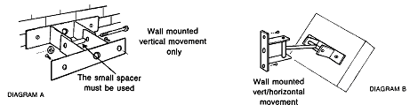

BN Thermic Instruction Sheet
Ceramic Infrared Heaters
INSTALLATION AND OPERATING INSTRUCTIONS
The following information should be considered when installing Ceramic Infrared Heaters.
Installation should always be carried out by a qualified electrician or a competent person in accordance with current electrical regulations, protected by a suitably rated isolator and fuse or type 3 mcb.
- The heaters should always be installed using the mounting brackets provided to ensure adequate clearance from the wall.
- A minimum air gap of 450mm should always be allowed between the top of the heater and the ceiling or roof.
- A safety distance of 1mtr should always be left in front of a 1KW and 1.5KW heater. Heaters of 2KW, 3KW and 4.5KW should have a safety distance of at least 1.5mts.
- You also should ensure no flammable material could come into contact with the heater.
- Heaters should not be installed in areas where hazardous vapours may be present as defined in BS5345
- It is recommended the heaters be operated with a guard in front of the Ceramic element and should always be fitted to units mounted below 2.2mtrs.
- The safety guards are only intended to prevent large objects from directly hitting the Ceramic elements. Some applications will necessitate additional precautionary measures.
- The heater should only be installed in an indoor or weather protected environment.
The essential element of the heater is made from a ceramic material and mainly radiates its energy in the long-wave infrared waveband.
Before installing this heater, please read all the enclosed instructions carefully and follow any recommendations regarding installation and use.
Electrical installation
- Heaters are factory fitted with high temperature silicon rubber flexible cable conforming to BS 6500 having a temperature rating of 180°C continuous.
- Appliances must be earthed.
- It is advised that Type 3 (Type C) MCBs are used. In multi-ceramic single phase installations, in order to prevent the initial inrush current causing nuisance tripping, MCBs over rated by 60-70% may be required.
The CH fitting has been packed with a separate wall mounting bracket ready for attachment to the heater.
Place heater face down and attach one ‘U’ bracket to back. Make sure cable gland is towards the bottom of the heater

Location
- Heaters should be angled at 30° to 45° from the vertical whether wall or ceiling mounted.
- There must always be a minimum clearance of 450mm between top of heater and ceiling.
Wall mounting
- Decide whether vertical movement only (Diagram A) or vertical/horizontal movement (Diagram B) is required for correct positioning of heaters and assemble as shown.
- Avoid mounting heaters on structures liable to vibrate.
- Recommended mounting heights and safety distances should always be observed.
Recommended wall mounting heights
| Wall mounting Height (Metres) |
Safety distance from Heater (Metres) |
|||
|---|---|---|---|---|
| Model | Minimum | Recommended | Maximum | Minimum |
| CH-1500 | 2.2 | 2.5 | 3.5 | 1.5 |
| CH-3000 | 2.8 | 3.5 | 4.5 | 1.5 |
Commissioning
- Perform Insulation and Earth continuity Tests.
- Switch on heater(s) and confirm that Ceramic element(s) operating.
- Ensure each heater aims its warmth into the target area by adjusting heater angle(s) as necessary then tighten bracket bolts when satisfactory coverage is achieved.
- The user/customer should be made aware of all aspects of operation and safety and strongly advised to retain these instructions for reference.
- In unoccupied premises it is recommended that the heating system is switched off and isolated from the electrical supply.
Maintenance
Ceramic Heaters contain no moving parts and therefore very little maintenance is required other than to ensure that there is no excessive build?up of dust/dirt on the reflectors or Ceramic elements especially after a long period of none use as this can cause overheating and premature ceramic failure. Depending on siting conditions a heater should be regularly inspected, but at least once per year.
Before any maintenance work is carried out
- Allow heater case/element to cool to avoid injury.
- Always isolate appliance(s) from electrical power supply.
Spares
- Spare Ceramic elements and reflectors are available contact your supplier for details.
WARRANTY. Your BN Thermic Heater is guaranteed for the period of one year from the date of purchase. We will repair or replace at our discretion any part found to be defective. BN Thermic cannot assume any consequential liability. This guarantee in no way prejudices your rights under common law and is offered as an addition to consumer liability rights.